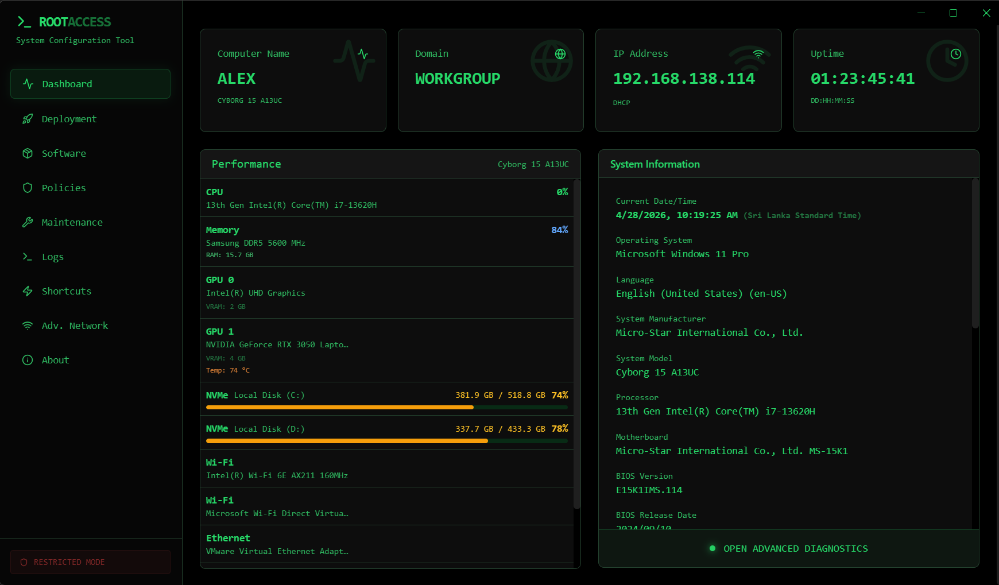

ROOTACCESS is an advanced workstation configuration and deployment tool built for modern IT administrators. It replaces fragmented scripts and disparate administrative panels with a single, incredibly fast, unified interface.

Historically, setting up a new Windows workstation or server required navigating through multiple legacy Control Panel applets, running various independent PowerShell scripts, keeping track of Winget installation IDs, and manually configuring domain settings.
Combines Network configuration, Domain joining, Software provisioning, and Policy application into a single React-based interface.
Utilizes an Electron native bridge to execute powerful PowerShell commands securely without exposing standard command lines to the user.
ROOTACCESS leverages modern web technologies wrapped in Electron to safely interact with core Windows system APIs via PowerShell.
Live monitoring of system resources via optimized PowerShell queries. Tracks CPU load, memory usage, disk space, and active network connections. Includes an Advanced System Report engine that generates and saves comprehensive hardware audits in a portable HTML format.
The Deployment Hub is the centralized command center for machine provisioning. It combines Network Configuration, System Preparation, Domain Joining, and Deployment Settings into a single tabbed interface — enabling full workstation setup without leaving the application.
Four integrated modules working together to provision any workstation in minutes.
Dual-stack IPv4/IPv6 static addressing with auto-config from Host ID, built-in connectivity testing, and live adapter detection.
Structured hostname builder with prefix/suffix naming, secure AD credential input, and automated Add-Computer execution with restart.
Disk partitioning with auto-provisioning rules, local user account management, timezone setup, and quick system tool launchers.
Persistent JSON-based deployment profiles for network, domain, and system defaults — synced across all Hub tabs in real-time.
Integrated Activity Log — Every module includes a real-time terminal-style log with timestamped PowerShell output, success/error coloring, and clipboard support.
Enforce registry-level restrictions instantly.
Automated system cleanup routines.
A full-featured network diagnostics and management toolkit built directly into ROOTACCESS. Organized into three dedicated tabs — Diagnostics, Adapter Management, and Wi-Fi Security — it eliminates the need for third-party network utilities entirely.
Continuous ICMP pings, visual traceroutes with hop latency, Cloudflare CDN speed tests, and rapid port scanning.
Full control over network interfaces with quick actions for IP resets, DNS flushing, MAC randomization, and deep TCP/IP stack resets.
Discover nearby SSIDs with signal and security details, manage saved wireless profiles, and configure legacy hosted networks.
Replaces manual software installations. A fully integrated UI wrapper for the Windows Package Manager (winget). Categorized applications with one-click bulk installation and real-time progress tracking.
A quick guide to navigating the core modules and automating your workflow.
Launch the application as Administrator. The Dashboard will immediately load system metrics. Use the sidebar to track CPU, RAM, and Network status.
Navigate to the Deployment Hub. Assign a static IP or enable DHCP. Next, rename the computer in System Prep and start the automated Domain Join process.
Under Software Management, select critical business applications (e.g., Browsers, IDEs) from the App Library and install them in bulk via Winget.
Secure the workstation by toggling RDP access, blocking removable USB storage, editing Hosts files, and configuring power plans instantly.
Before handoff, run standard deep clean operations to wipe temp files, flush DNS, and clear standby memory for optimal system performance.
Keep an eye on the Activity Logs tab. Every installation, automated script execution, and security policy change is recorded for troubleshooting.
Currently running exclusively on Windows Client computing versions (Windows 10/11)? Soon, we are rolling out VIP Mode designed strictly for System Admins managing Windows Servers.
We are preparing to take ROOTACCESS out of beta. A centralized community and official documentation hub will be launching soon.
Expected website features: